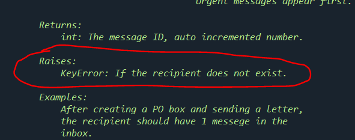

אני צריך הבהרה עבור הפעולה search_inbox:
- האם מבצעים את החיפוש על כל ההודעות (כולל אלו שנקראו)?
- האם צריך לסמן את ההודעות שנמצאו בחיפוש כ"נקראו"??

אני צריך הבהרה עבור הפעולה search_inbox:
1.כן
2. להבנתי לא
ואיך אפשר בלי 20 תווים בהודעה יפה שכזו…
תודה על התגובה המהירה.
עוד שאלה קטנה…
לגבי הפעולה send_message, אני רואה שלפי התיעוד יש יכולת של הפונקציה לזרוק שגיאה (KeyError), למיטב זיכרוני, לא למדנו עדיין טיפול בשגיאות. האם להתעלם??? למחוק?? לממש??
נענה במקום אחר בפורום - צריך לחשוב על מה יזרוק את השגיאה הספציפית הזו - כלומר לממש
מה?!
לא ראיתי את זה…
כי מה שאני יודע זה שצריך ליצור את קריאת האינבוקס
ואת החיפוש באינבוקס
איפה המשימה של לממש שגיאה ב שליחת דואר מופיעה?

אני אשמח להבין מה הכוונה בלממש. אני הבנתי את זה באופן שונה - שיש שגיאה אם המקבל לא קיים. זה קורה אוטומטית
נשמע שהבנת את זה נכון. אם המשתמש לא קיים - זו ורק זו השגיאה שצריכה להיזרק. אם הוא קיים לא תיזרק אף שגיאה.
אתה לא מממש בעצמך את השגיאה ולא זורק אותה, אתה פשוט מבצע את זה בדרך שבה היא זו שנזרקת ולא משהו אחר
אכן כך